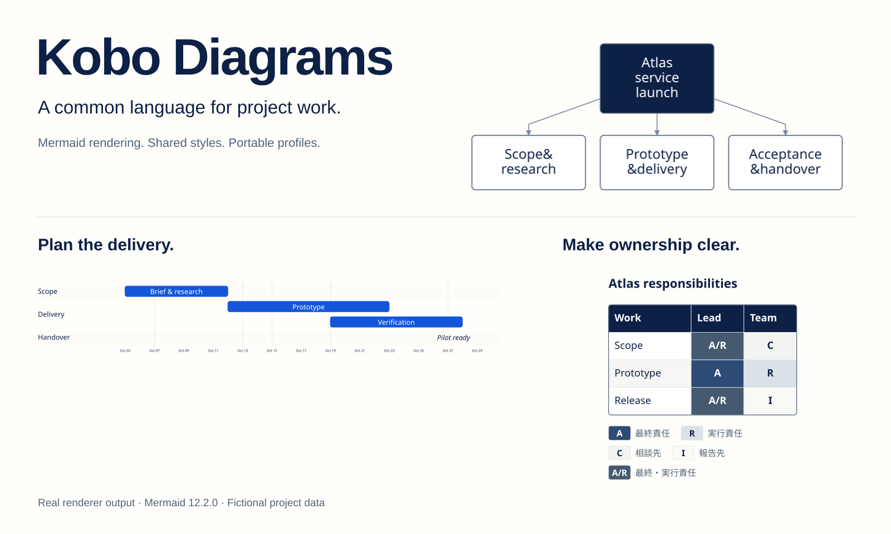
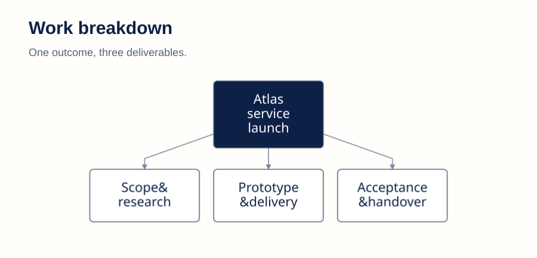
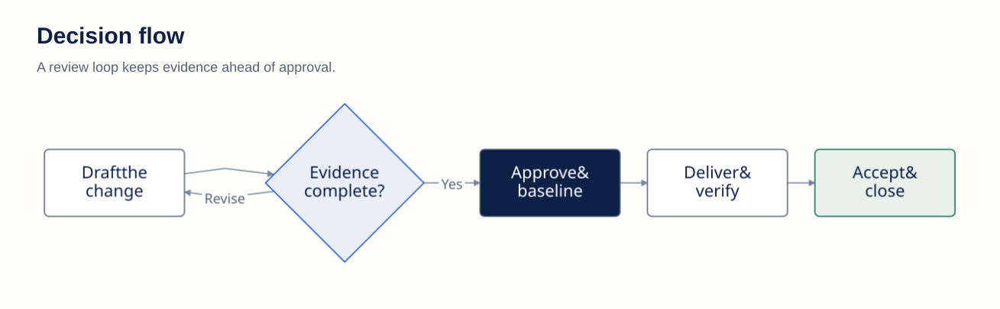
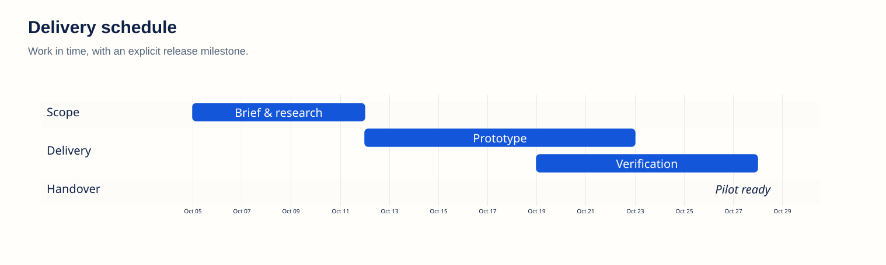
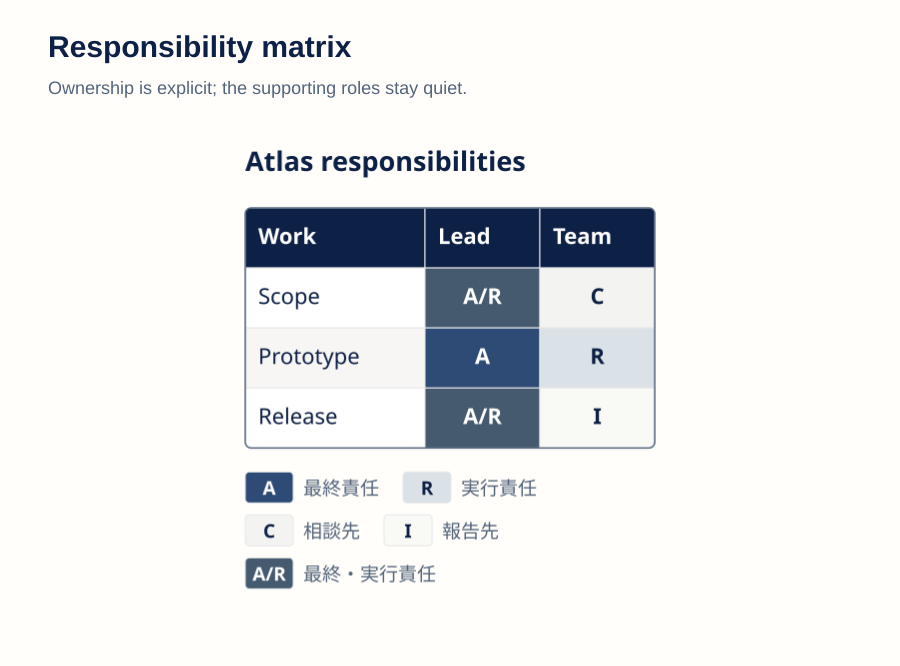
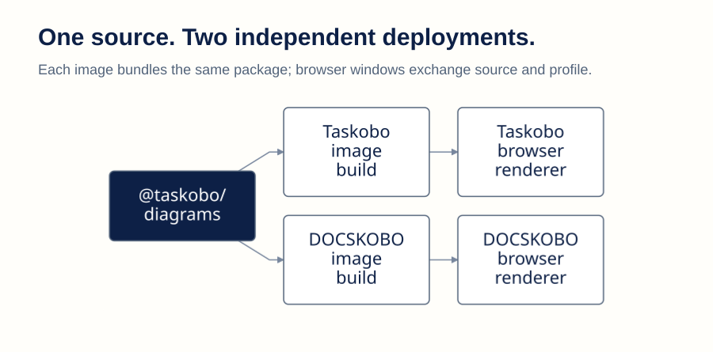

Kobo Diagrams
Real renderer output, one shared profile. All Atlas project data is fictional. Sources and reproduction


One outcome, three deliverables. Original SVG
A review loop keeps evidence ahead of approval. Original SVG
Work in time, with an explicit release milestone. Original SVG
Ownership is explicit; the supporting roles stay quiet. Original SVG
Each image bundles the same package; browser windows exchange source and profile. Original SVG